What Digit Stack does, and how
Digit Stack is a keyboard-first maths game set by school year from Year 1 to Year 7: written methods for the four operations, then number, fractions, measures, shape, data and algebra, and a timed mixed test. Content and layouts follow the national curriculum in England and its Mathematics Appendix 1.
It runs in the browser. There is no account, nothing to install, no adverts, and the game sends nothing anywhere: progress stays in the browser on the device.
Play Digit Stack1. How a child moves up
On the start screen the child, or you, sets the school year with the arrow keys. There are ten areas, opened with the keys 1 to 9 and 0: four for calculating (divide, multiply, add and subtract) and six more (number; fractions, with decimals, percentages and, from Year 6, ratio; measures; shape; data, with probability in Year 7; and algebra). Each area starts at the school year and moves up on its own when its year check is passed, so a child can be ahead in one area without being pushed on in the others.
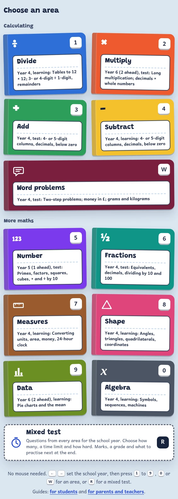
2. Watch, learn, then test
Each area and year has three stages, and the game moves between them by itself.
- Watch. The first time a year is opened in an area, the game works an example for each kind of question that year uses, shortest first (Year 4 multiply ends with short multiplication, then long). It fills in one box per step and shows the same reason it gives a child who gets that box wrong. Each example is picked to show the year’s decisions both ways, such as a carry and no carry, in as few steps as possible. A kind of question that teaches an idea, such as a symbol standing for a number, gets two examples with different numbers. N skips the examples, and W replays them at any point in learning and returns to the same box. Tests have no examples.
- Learn. The game guides the child one box at a time, with a prompt for each step. A wrong digit gets an explanation, and the child corrects it to finish the problem.
- Test. Every box is open and there are no prompts. The child moves between boxes with the arrow keys and hands in with Enter. Only the answer is marked.
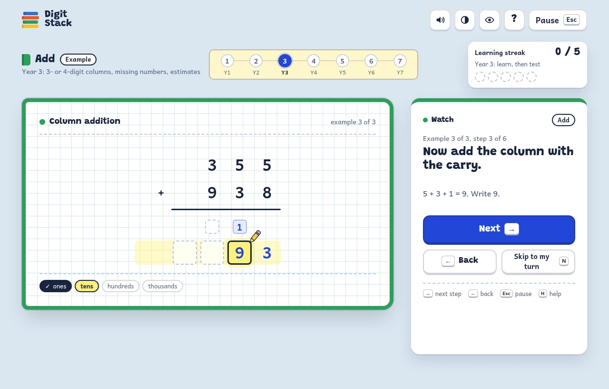

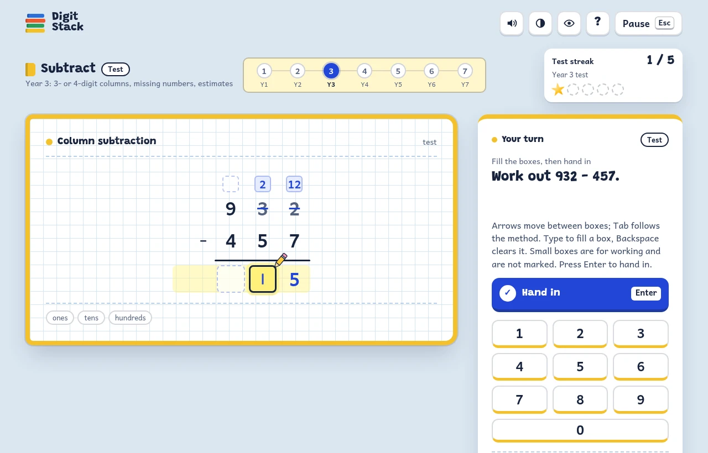
Each stage needs a number of clean rounds in a row, meaning rounds with no mistakes. Any mistake sets the count back to 0. The number depends on how long that area's rounds are in that year: 10 when a round averages under 5 key presses, 5 for 5 to 15, and 3 above 15. Learning and the test need the same number, so passing a year takes at least twice the figure below.
| Area | Y1 | Y2 | Y3 | Y4 | Y5 | Y6 | Y7 |
|---|---|---|---|---|---|---|---|
| Divide | 10 | 10 | 10 | 10 | 5 | 5 | 5 |
| Multiply | 10 | 10 | 10 | 5 | 3 | 3 | 3 |
| Add | 10 | 10 | 5 | 5 | 5 | 5 | 5 |
| Subtract | 10 | 10 | 5 | 5 | 5 | 5 | 5 |
| Number, Fractions, Measures, Shape, Data, Algebra | 10 | 10 | 10 | 10 | 10 | 10 | 10 |


3. What each year covers
The tables give the kinds of question in each area and year. The curriculum's own year lists run to Year 6; key stage 3 is one programme for Years 7 to 9, so Year 7 here is a selection from it.
| Year | Age | Multiply | Divide | Add and subtract |
|---|---|---|---|---|
| 1 | 5-6 | Rows of 2, 5 or 10 dots up to 100; 2, 5, 10 tables | Sharing and grouping; dividing by 2, 5, 10 | Facts to 20; 2-digit sums; three 1-digit numbers; missing numbers such as 7 = ? − 9 |
| 2 | 6-7 | 2, 3, 4, 5, 8, 10 tables; missing numbers | Same tables; missing numbers | 3-digit and 1s, 10s or 100s; missing numbers; 2- and 3-digit columns |
| 3 | 7-8 | Tables to 12; 2- or 3-digit × 1-digit; scaling and pairing problems | Tables to 12; short division, exact; sharing and grouping problems | 3- and 4-digit columns; missing numbers with 1s, 10s, 100s; estimates |
| 4 | 8-9 | Tables to 12 × 12; × 0, × 1, three numbers; 3- or 4-digit × 1-digit; 2-digit × 2-digit | Division facts; ÷ 1; short division with remainders | 4- and 5-digit columns; decimals to 2 places; estimates; below zero within 10 |
| 5 | 9-10 | Long multiplication up to 4-digit × 2-digit; mental × with 10s and 100s; rates | 4-digit short division; long division by 2 digits; remainders in a story | 5- and 6-digit columns; decimals; estimates; below zero within 20 |
| 6 | 10-11 | Up to 4-digit × 3-digit; a decimal × a digit | Long division of 4 and 5 digits; answers to 2 decimal places; remainders as fractions | 6-digit columns; decimals to 3 places; estimates; below zero within 100 |
| 7 | 11-12 | Up to 5-digit × 3-digit; decimals × 2-digit; negatives | Divisors up to 3 digits; decimals; negatives | 6- and 7-digit columns; decimals; adding and subtracting negatives |
| Year | Number | Fractions | Measures |
|---|---|---|---|
| 1 | Counting in 2s, 5s, 10s; 1 more and less; comparing; words to 20 | A half and a quarter of an amount; naming the shaded part | Coins to 20p; o'clock and half past; days and months; rulers |
| 2 | Place value; <, > and =; counting in steps; partitioning | 1/3, 1/4, 2/4 and 3/4 of amounts and shapes; 2/4 = 1/2 | Time to 5 minutes; money and change; scales |
| 3 | To 1,000; 10 and 100 more or less; counting in 4s, 8s, 50s; Roman numerals to XII | Tenths; fractions of amounts; equivalents; adding within a whole; comparing | Adding measures; perimeter; clocks with Roman numerals; durations; pounds and pence |
| 4 | Rounding to 10, 100, 1,000; Roman numerals to C; counting through 0; factor pairs | Equivalents; tenths and hundredths as decimals; ÷ 10 and 100; rounding decimals | Converting units; area by counting squares; money with decimals; the 24-hour clock |
| 5 | To 1,000,000; primes and factors; squares and cubes; × and ÷ by 10, 100, 1,000 | Mixed numbers; related denominators; × whole numbers; thousandths; percentages | Metric units with decimals; inches; area of rectangles; volume from cubes |
| 6 | To 10,000,000; order of operations; HCF and LCM; across zero | Simplifying; any denominators; × and ÷ fractions; 3/8 = 0.375; percentages of amounts; ratio, scale factor, sharing | Conversions to 3 places; miles and km; area of triangles and parallelograms; volume of cuboids |
| 7 | Powers and roots; prime factors; standard form; decimal places and significant figures | All four operations with fractions and negatives; percentage change; reverse percentages; ratio and proportion | Trapezia; circles in terms of π; prisms; area units; speed; unit price |
| Year | Shape | Data | Algebra |
|---|---|---|---|
| 1 | Naming 2-D and 3-D shapes; whole, half and quarter turns | Tally charts and pictograms | Balancing; function machines; repeating patterns |
| 2 | Sides, vertices, faces, edges; a line of symmetry; turns as right angles | Pictograms, tallies, block diagrams, tables | Balancing to 100; machines with × and ÷; patterns; finding the number a symbol stands for |
| 3 | Right angles; parallel and perpendicular lines | Bar charts and pictograms with scales; tables | Two-step machines; machines shown by two worked pairs; the rule of a sequence; finding a symbol |
| 4 | Acute, right and obtuse; triangles; quadrilaterals; lines of symmetry; coordinates; translations | Bar charts; time graphs | Symbols for numbers: given, found, and two worked lines with a third to do; sequences; machines |
| 5 | Protractors; angles on a line and at a point; reflex angles; regular polygons; reflections | Line graphs; timetables | Letters for numbers, given and found; sequences; formulae |
| 6 | Angles in triangles and quadrilaterals; regular polygons; vertically opposite angles; circles; 4-quadrant coordinates; nets | Pie charts; the mean | Formulae; sequences; equations; two unknowns; counting combinations; letters with a different number on each line |
| 7 | Parallel lines; angle sums; Pythagoras; trigonometric ratios; rotation; enlargement | Mean, median, mode, range; probability; scatter graphs | Substitution; collecting terms; expanding and factorising; equations; nth term; straight-line graphs |
About 1 in 4 column subtractions exchange across a zero. From Year 4, some add and subtract problems are number sentences with negative numbers in them, about 1 in 5 from Year 5. Some of their answers are below zero and some are not, so the child decides the sign each time.
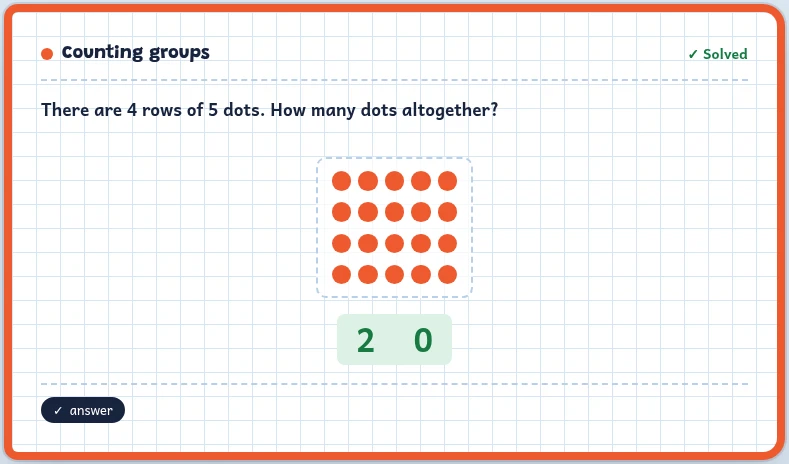
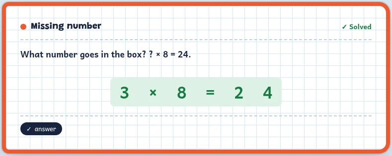

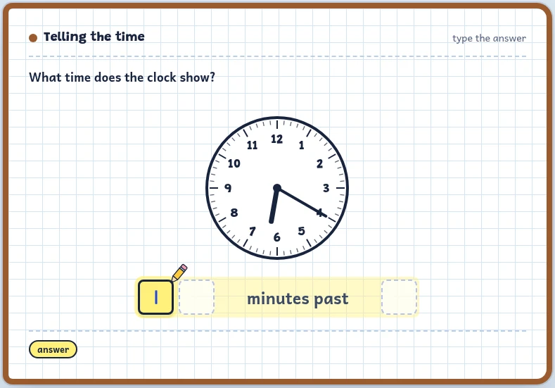
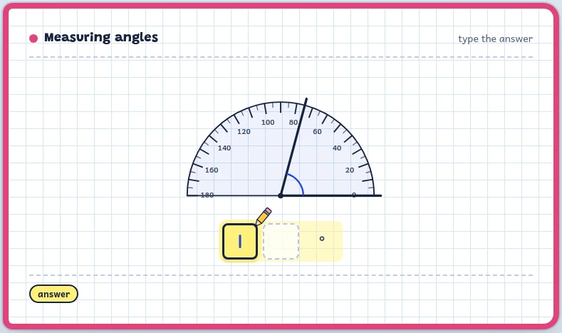
4. Pitched for strong pupils
Each year here is harder than the standard programme for that year: it takes the year's own content at the top of its range, adds some of the next year's methods, and adds missing-number problems from Year 1. The national curriculum expects most pupils to move through the programme at broadly the same pace, and says:
“Pupils who grasp concepts rapidly should be challenged through being offered rich and sophisticated problems before any acceleration through new content.”
Mathematics programmes of study, key stages 1 and 2, Department for Education
If a child needs the standard pace, set the school year one lower than their actual year.
5. The written methods
Each method follows Mathematics Appendix 1. The examples below are the appendix's own examples, finished in the game. Appendix 1 notes that “the exact position of intermediate calculations (superscript and subscript digits) will vary depending on the method and format used”. Digit Stack puts each carry in a small box just above the row it goes into; the appendix's examples write addition and short multiplication carries under the answer line.
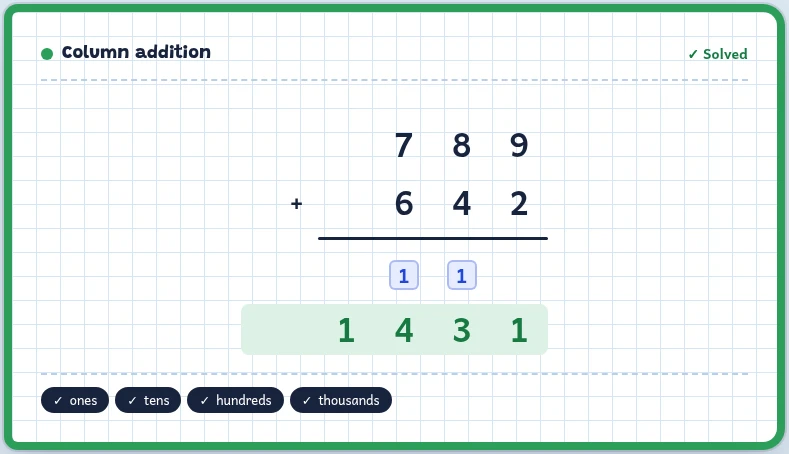
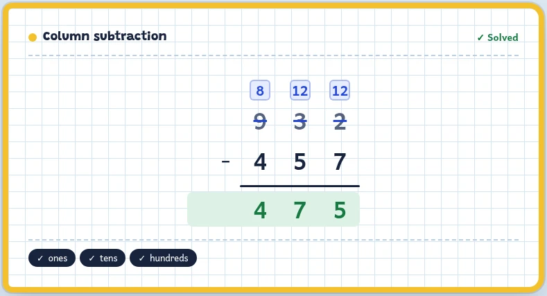
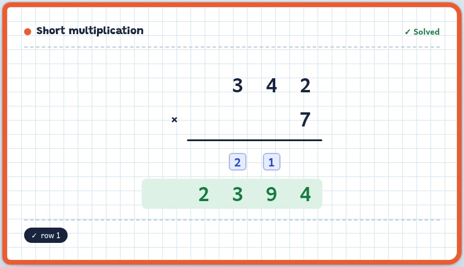
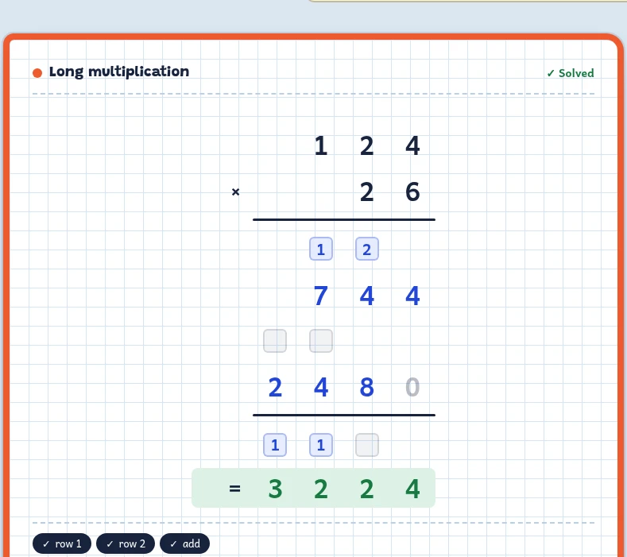
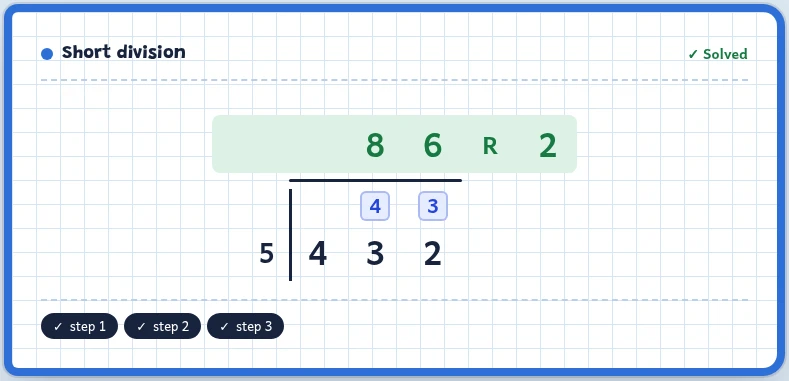
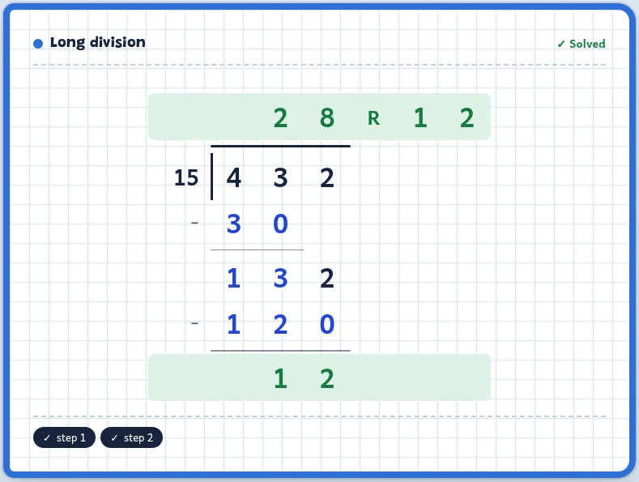
Decimals (from Year 4). Decimal sums are written with the points in line, and the shorter decimal gets place-holder zeros, as in 23.40 + 9.75. Year 6 division can go on past the point, as Appendix 1’s third long division does: 432 ÷ 15 = 28.8, with 432 written as 432.0. A remainder can also be written as a fraction in its simplest form, the appendix’s second example: 432 ÷ 15 = 28 12/15 = 28 4/5. Remainders after R stay where the curriculum uses them. Year 3 meets tenths as fractions; decimal notation starts in Year 4.
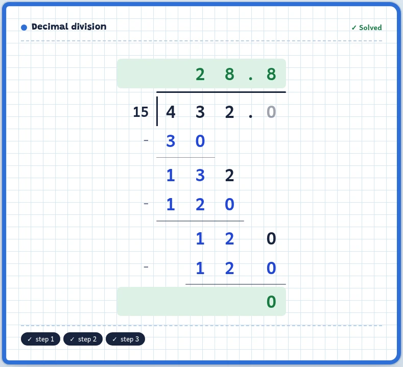
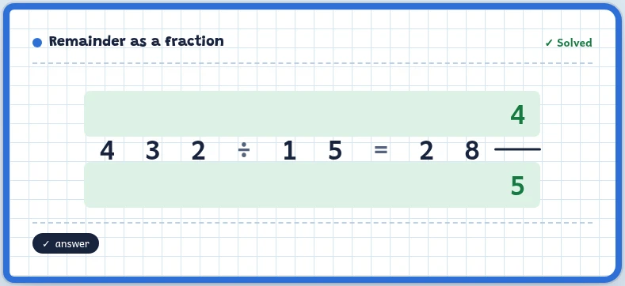
The game uses the word “exchange”, not “borrow”. Long division brings each digit down, as in the appendix's third example, so 15 × 2 = 30 is written under 43; the appendix's first example writes 300 under 432 instead. Remainders are written after R.
6. Pictures, fractions and choices
Outside the written methods, a question is written on the page with a number sentence and answer boxes under it, sometimes with a picture: a clock, coins, a scale, a ruler, a shape with its sides or angles labelled, a protractor, a coordinate grid, a chart, a table or a timetable. Every answer is typed:
- Fractions take the top number, then the bottom. Where a question asks for the simplest form, only the simplest form is marked right; otherwise the bottom number is given, so only one answer fits.
- Decimal points, units and the colon in a time are already written in the answer.
- <, = and > compare (, and . also work). A word answer, such as obtuse or kite, is chosen by its number; yes and no are 1 and 0, as with an exchange.
- Any answer that could be below zero has a sign box, so the box itself never gives the sign away; a pair of coordinates has one for each number.
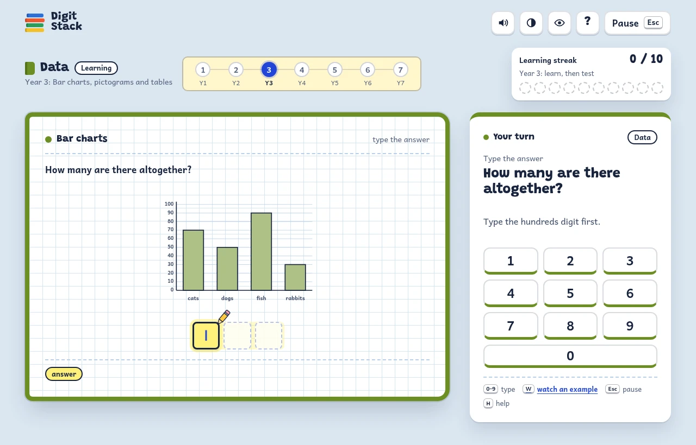
Symbols and letters. From Year 2 a shape such as ★ or ▲ stands for a number, and from Year 5 a letter does. The page always says which number it stands for, or asks the child to find it, and the shape changes from question to question, so no shape seems to have a value of its own; within one question the same shape is always the same number. Years 4 to 6 also have questions with two worked lines, where the same symbol stands for two different numbers, and a third line to work out. The worked examples for these kinds show two examples with different numbers, not one, and every explanation says what a symbol is.
Tasks that need drawing or building, such as drawing angles, ruler and compass constructions, plotting by hand or making nets, are left out, because everything is typed. The game asks for the matching readings and calculations instead: measuring a drawn angle, finding a missing angle, reading coordinates, naming the shape a net makes.
7. Why every small box needs a digit
In learning, the cursor stops at every small box, whether or not anything carries. The child types the carry, the amount left over in short division, or 1 to exchange a ten in subtraction, or 0 if there is none. A 0 is not written on the sheet; the box turns grey.
The stop happens in the same place with the same wording either way, so the stop itself does not tell the child whether something carries. They have to work it out each time. A wrong 0 is a mistake like any other.

8. Mistakes and marking
Colours on the sheet carry meaning. The child’s digits are blue and the question’s are black. Marked answers are green when right and red when wrong, and the proper working shown after a wrong test answer is purple. Each area also has its own colour around the page: blue for divide, orange for multiply, green for add, yellow for subtract, purple for number, teal for fractions, brown for measures, pink for shape, olive for data and slate grey for algebra. With colour-blind friendly colours on, these change; see Display settings.
In learning
A wrong digit shows why and what the box needs. The child corrects it and finishes the problem, but the round is not clean, so the count goes back to 0. Afterwards Enter tries the same problem again and N starts a new one.

In tests
Only the answer boxes are marked. Carries, exchanges, left-overs and partial products are the child's own working and are not marked. A wrong answer marks each answer box right or wrong, shows the proper answer and the full working, and sets the count to 0; there is no retry. Enter then walks the child through that same problem, one box at a time with the reason for each step, as the worked examples do, and afterwards goes on to the next problem. N skips the walkthrough.

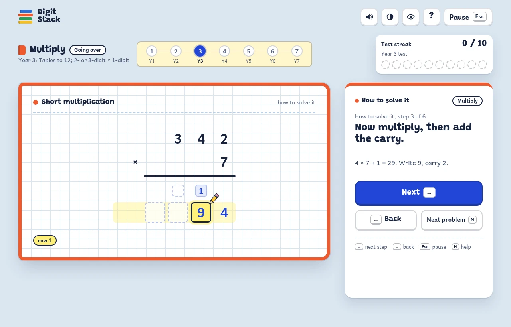
9. The mixed test
R on the start screen opens a mixed test: questions from all ten areas for the school year on the ruler, in a random order, with each area coming up about equally often. Three settings are chosen with the arrow keys:
- Questions: 10, 20, 30, 40 or 50.
- Time limit: none, or 10, 15, 20, 30, 45, 60 or 90 minutes.
- How hard: medium asks questions as in learning. Easy makes three questions for each place and asks the one with the fewest key presses and decimal places; hard asks the one with the most. The year stays the same; easy and hard change the mix within it.
Each question works like a test, with every box open, but nothing is marked until the test is handed in. Until then the child can move between questions in any order and change any answer: N or Enter goes to the next question, P back, and a click on a number in the strip under the page goes to that question. The strip fills in each question that has an answer. E hands the test in after a check that lists any question with no answer, so a skipped question is not missed by accident.
The time limit counts down to a fixed moment, so it keeps running if the child pauses or closes the game, as in a real test. Esc pauses; from there E hands in at once and Q leaves the test for later (R carries on). When the time runs out, every answer typed so far is marked and the rest count as not answered.
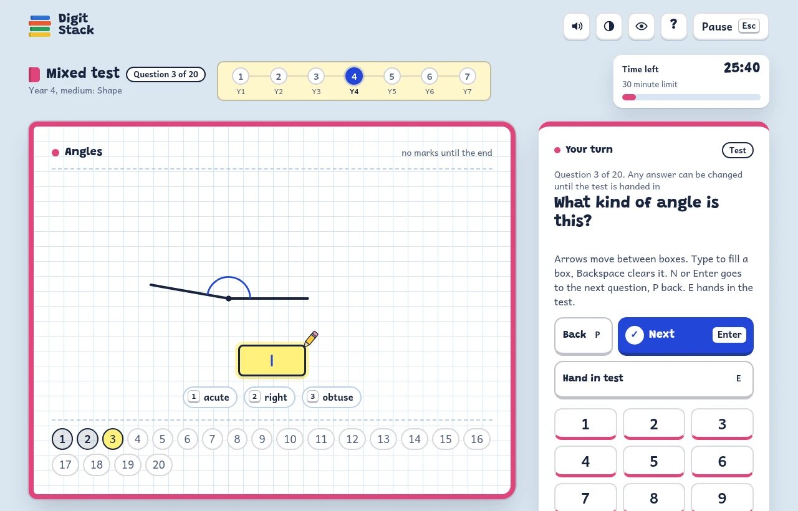
The results show the score, the percentage, a grade, the time taken and a score for each area. The arrow keys step through every question, marked, with the proper answer and working where it was wrong. Enter then goes over each question that was not right, one after another, showing how to solve it step by step, and returns to the results; F finishes without going over them. The mixed test does not change any area’s year or clean count.
| Grade | Score |
|---|---|
| A+ | 95% or more |
| A | 90% to 94% |
| A− | 85% to 89% |
| B+ | 80% to 84% |
| B | 75% to 79% |
| B− | 70% to 74% |
| C+ | 65% to 69% |
| C | 60% to 64% |
| C− | 55% to 59% |
| D | 50% to 54% |
| F | Under 50%: always a fail |

10. Saving and privacy
Progress is saved in the browser’s storage on the device: the school year, the years learned and passed in each area, each area’s clean count, the round in progress with every box typed so far, and a mixed test in progress. The game can be closed at any point and opens again where it stopped. A mistake made before closing still counts, and a finished round is already counted.
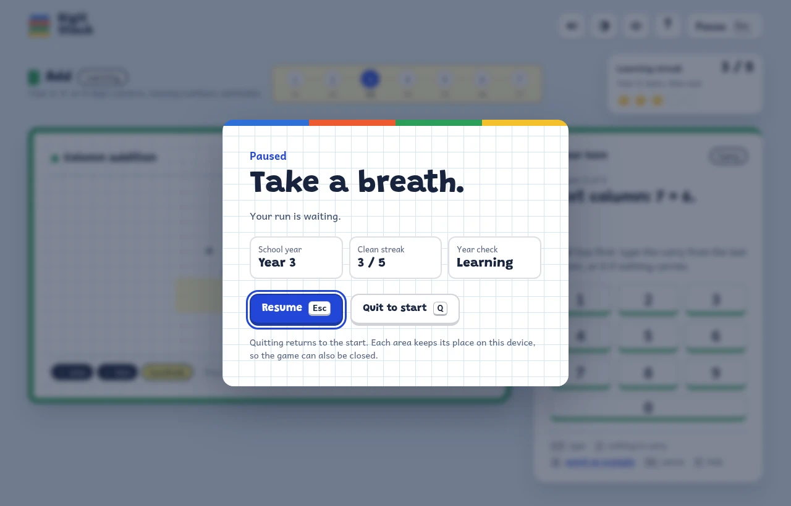
- Each browser keeps its own progress. Two children on one computer need two browser profiles.
- Clearing this site’s data in the browser resets everything.
- If the browser blocks storage, the start screen says that it is not saving.
- The game sends nothing anywhere. It loads only its own files: no analytics, no adverts, no outside scripts. It is hosted on GitHub Pages, and GitHub’s own terms and privacy statement cover visits to the page.
11. Display settings
Two settings are saved on the device, and the guides follow them too.
- Theme (T, or the sun and moon button): automatic, light or dark. Automatic follows the device’s setting and changes with it.
- Colour-blind friendly colours (C, or the eye button). Right answers turn blue and wrong ones orange; the proper working after a wrong test answer turns reddish purple with a dotted underline; each right answer gets a tick and “Not quite” gets a cross; and the ten book covers use colours from the Okabe-Ito and Paul Tol palettes, which are made for colour vision deficiency, chosen by measurement so they stay apart.
The colours were checked by simulating protanopia, deuteranopia and tritanopia with the model of Machado, Oliveira and Fernandes (2009). With the usual colours, right and wrong are 7 apart for protanopia (CIE76 delta E, where about 2 is just noticeable), though a wrong box also has a border and a “was” label; in dark mode the child’s digits and the proper working are 1 apart, which is no difference at all. With colour-blind friendly colours, right and wrong are at least 85 apart and the digits and working at least 20, in light and dark, and every pair of the ten book covers is at least 17 apart for each kind of colour vision. The usual cover colours are at least 30 apart for typical colour vision in light and 26 in dark, but are not chosen for colour blindness; that is what the setting is for. Every book also shows its name and its own sign. Text meets the WCAG contrast minimums in all four combinations.
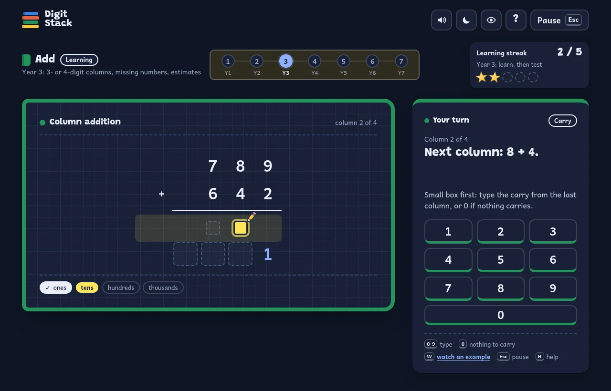
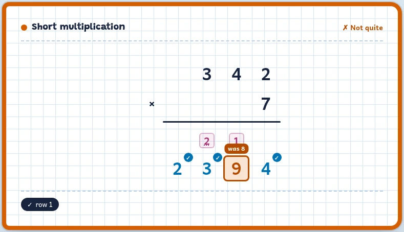
12. Current limits
- Typed answers only. Drawing and building tasks are left out (see Pictures, fractions and choices). Key stage 3 work that would need a calculator is set in exact forms instead: circles in terms of π, trigonometric ratios as fractions from whole-number triangles, Pythagoras with whole-number sides.
- Short problems. Word problems take one or two steps. There is no extended reasoning, explaining or proof.
- Year 7 is a selection. Key stage 3 is one programme for Years 7 to 9; Year 7 here takes part of it, pitched as the first year of that programme.
- The layout gives some hints. Answer rows are drawn to the length of the answer, so the number of boxes can show, for example, that the last column carries or that a subtraction answer is short. In division, there is no quotient box over a first digit the divisor does not go into, and the R box appears only when there is a remainder. In long multiplication the place-holder 0 is already written in.
- One learner per browser. There are no accounts and no class reports, and a mixed test’s results are shown once and cleared when the child finishes reading them.
13. How the answers are checked
The project’s tests make 2,000 questions in every area and year (140,000 in all) and work each answer out again a second way, without the game’s own arithmetic. A finished sentence is evaluated with exact fractions; a picture question is worked out from the picture’s own data, such as the clock’s hands, the chart’s bars, a shape’s corner points or the Roman numeral itself. In a browser, the tests also play every area by keyboard, run full mixed tests, and check that the pages fit at computer and phone sizes.
14. Using it at home or at school
- It is tested in Google Chrome at computer and phone sizes. A physical keyboard is best; on tablets and phones the on-screen number keys can be tapped instead.
- To move a child to a different year, set the school year on the start screen. Areas already ahead stay ahead.
- The student guide explains the game in a child’s words: How to play Digit Stack.
- The source code is public. Downloading it and opening
index.htmlin a browser runs the game without the internet.
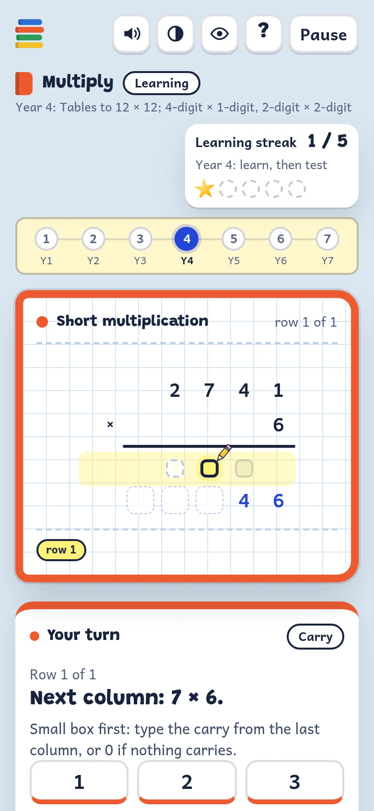
15. Sources
- Department for Education, National curriculum in England: mathematics programmes of study.
- Department for Education, Mathematics Appendix 1: examples of formal written methods for addition, subtraction, multiplication and division (PDF).